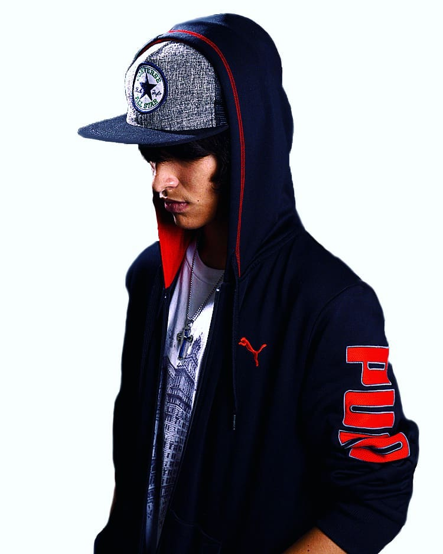

Ryzzer
MCRyzzer es un artista/compositor costarricense del género urbano residente de San Carlos de Alajuela, Oficializó su carrera cuando decidió grabar su primera canción por causa de un amigo quien lo logro convencer para que grabara la canción titulada Is Back.
Tema que obtuvo un fuerte impacto en su ciudad, su música ha tenido gran aceptación en la zona norte lo cual lo llevo a sacar su rimer MixTape llamado The Sky in Flames hace pequeñas presentaciones en diferentes partes del país. The Bad Boy es el nombre de su primer álbum en el cual trabaja en secreto y no se sabe cuándo saldrá.